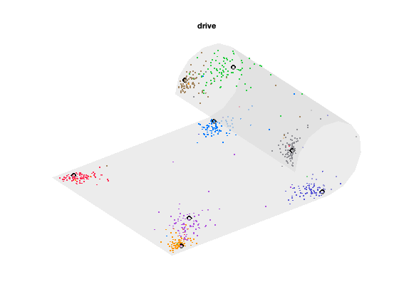
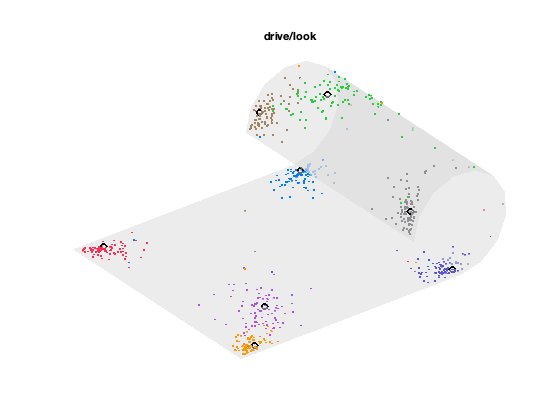
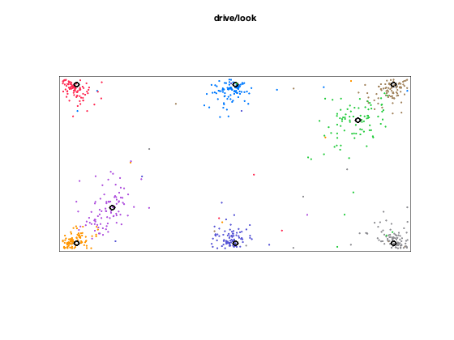
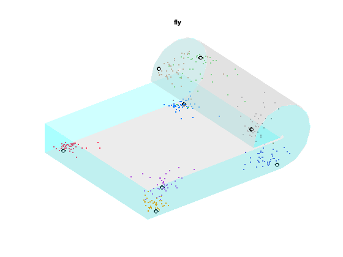
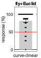
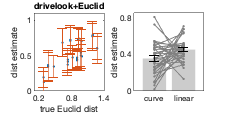

Contents
- Introduction
- Load data
- Check demographic information (Method/Participants section)
- Duration of experiment (Method/Task section)
- Object-location memory: result (Exp1/2/3 result section)
- Visualise the final object drop location (Fig.2,5,supple Fig.3)
- check the positional bias in the centre object (Exp1 Result Section1)
- distance estimation task: comparison task (Fig.3,4,6)
- distance estimation task: slider (Fig.3,4,6)
- Debrief analysis (Result section)
Introduction
This is analysis script for my series of spatial memory experiment on the non-flat surface.
Participants learned 8 objects location inside the virtual environment (Unity WebGL)and then estimated the inter-object distances. I mainly compared the distance estimate for the flat and curved part to test whether path and 3D Euclidean distance can be retrieved correctly or interacts each other. Path distance is related to a surface-based map and Euclid distane is related to a volumetric 3D map.
Reference: Kim and Doeller (bioRxiv)_XX. doi:XX 21/04/2021, Dr. Misun Kim (mkim@cbs.mpg.de)
clear; close all;clc;
Load data
- I collated all behavioural results (each tasks, version of experiment, participants) into MATLAB struct variable in .mat files.
- Load these files into workspace
expName={'drive+Path','drive+Euclid','drivelook+Path','drivelook+Euclid','fly+Euclid'};
for i=1:5
load(sprintf('../data/data_%s.mat',expName{i}),'alldata');
behAll{i}=alldata;
end
clearvars alldata;
Check demographic information (Method/Participants section)
Summarize self-reported sex and age of participants for each experiment (online participants)
for i=1:5 sex=cell2mat({behAll{i}.sex});% sex is coded by number 1,female; 2,male; 3,other age=cell2mat({behAll{i}.age});% age is integer number (18-35) fprintf('%s, age:mean=%.1f yrs, SD=%.1f, #female=%d, #male=%d, #non-binary=%d \n', expName{i},mean(age),std(age),nnz(sex==1),nnz(sex==2),nnz(sex==3)); end
drive+Path, age:mean=22.7 yrs, SD=4.0, #female=12, #male=30, #non-binary=0 drive+Euclid, age:mean=24.2 yrs, SD=4.8, #female=16, #male=29, #non-binary=0 drivelook+Path, age:mean=23.9 yrs, SD=4.7, #female=10, #male=33, #non-binary=1 drivelook+Euclid, age:mean=23.7 yrs, SD=4.8, #female=13, #male=31, #non-binary=0 fly+Euclid, age:mean=23.5 yrs, SD=4.5, #female=11, #male=30, #non-binary=0
Duration of experiment (Method/Task section)
check the duration of the experiment
for i=1:5 for sub=1:length(behAll{i}) try %in case some data is missing (e.g. sub32 in drive+Path are missing trajectory files for familiar, learning phase due to technical problem) durFamil{i}(sub,1)=behAll{i}(sub).familiarTraj.time(end)-behAll{i}(sub).familiarTraj.time(1);%duration of familiarisation period durEnd{i}(sub,1)=behAll{i}(sub).DistSlider.startTime(end); % timestamp at the last trial of slider task (last behavioural test, before the debrief) catch end end fprintf('%s, duration of famil:mean=%.1fsec, SD=%.1fsec, time at the end of distance estimation task:mean=%.1fmin, SD=%.1fmin \n', expName{i},nanmean(durFamil{i}),nanstd(durFamil{i}),nanmean(durEnd{i}/60),nanstd(durEnd{i}/60)); end % take a mean of familarisation duration for drive+Path (durFamil{1}) and % drive+Euclid (durFamil{2}) group fprintf('driving: duration of famil:mean=%.1fsec, SD=%.1fsec \n\n',nanmean([durFamil{1};durFamil{2}]),nanstd([durFamil{1};durFamil{2}])); % My MATLAB becomes too slow with large variable in the workspace % let's remove large trajectoy variable because I won't need them for now for i=1:5; behAll{i}=rmfield(behAll{i},{'familiarTraj','objLocLearnTraj','ObjLocTestTraj'}); end
drive+Path, duration of famil:mean=90.7sec, SD=28.0sec, time at the end of distance estimation task:mean=26.8min, SD=7.8min drive+Euclid, duration of famil:mean=99.8sec, SD=32.2sec, time at the end of distance estimation task:mean=29.5min, SD=6.8min drivelook+Path, duration of famil:mean=150.6sec, SD=61.2sec, time at the end of distance estimation task:mean=32.6min, SD=11.7min drivelook+Euclid, duration of famil:mean=158.2sec, SD=66.4sec, time at the end of distance estimation task:mean=34.1min, SD=11.3min fly+Euclid, duration of famil:mean=201.0sec, SD=69.8sec, time at the end of distance estimation task:mean=27.8min, SD=16.6min driving: duration of famil:mean=95.4sec, SD=30.4sec
Object-location memory: result (Exp1/2/3 result section)
- Quantify the magnitude of the error for all experiment
- Calculate the number of mean repetition per location, # of participants who met the learnin criteria,# of timeout trials
- Also compare the final distance error for the objects on the flat (F,G,H) and curved part (B,C,D)
objLoc2D=[0,0.95;0.9,0.95;0.9,0.05;0.7,0.75;0,0.05;-0.9,0.05;-0.9,0.95;-0.7,0.25];% normalised 2D coordinate for 8 objects for ver=1:length(behAll) % display the mean error, #timeout, etc errorThres=0.25; % learning criteria. Displacement error should be less than 25% of the short axis alldata=behAll{ver}; for sub=1:length(alldata) testData=alldata(sub).ObjLocTestSum;% summary for object-loation test result in each subject % driving and flying conditions should be analysed separately % because driving experiments saved normalised x-y coordinates and % flying experiments saved normalised x-y-z coordinates if (ver<5) %driving condition timeoutSum{ver}(sub,1)=nnz(testData.distError==-1); %number of timeout trials for each participant. remove the timeout trial (I logged -1 for distError column for timeout trial) if timeoutSum{ver}(sub,1)>0 testData.distError(testData.distError==-1)=NaN; testData.drop_x(testData.distError==-1)=NaN; % normalised drop location x (-1 to 1) testData.drop_y(testData.distError==-1)=NaN; % normalised drop location y (0 to 1) end [~,locId]=ismember([testData.target_x,testData.target_y],objLoc2D,'rows'); % get idx for 8 target location for i=1:8 subtrial=find(locId==i); disterrorLastTrial{ver}(sub,i)=min(testData.distError(subtrial(end-1:end)));% min error of the last two trials for location i numtrial{ver}(sub,i)=length(subtrial);%how many repetition was used for each location i droploc{ver,i}(sub,1:2)=[testData.drop_x(subtrial(end)),testData.drop_y(subtrial(end))];% save the last drop location for object i on subject sub in each experiment version end else % flying econdition timeoutSum{ver}(sub,1)=nnz(testData.distError==-1); if timeoutSum{ver}(sub,1)>0 testData.distError(testData.distError==-1)=NaN; testData.pos_x(testData.distError==-1)=NaN;% normalised drop location x (-1 to 0.21) testData.pos_y(testData.distError==-1)=NaN;% normalised drop location y (0 to 1) testData.pos_z(testData.distError==-1)=NaN;% normalised drop location z (0 to 0.42) end for i=1:8 subtrial=find(testData.targetLoc==i); disterrorLastTrial{ver}(sub,i)=min(testData.distError(subtrial(end-1:end)));% min error of the last two trials for location i numtrial{ver}(sub,i)=length(subtrial);%how many repetition was used for each location i droploc{ver,i}(sub,1:3)=[testData.pos_x(subtrial(end)),testData.pos_y(subtrial(end)),testData.pos_z(subtrial(end))];% save the last drop location for object i on subject sub in experiment version ver end end end goodsublist_objloc{ver}=prod(disterrorLastTrial{ver}<errorThres,2)==1;%those who placed all 8 objects at the correct location in the last repetition of that object fprintf('%s, #timeout per subject=%.2f \n',expName{ver},mean(timeoutSum{ver})); end fprintf('\ndrive exp combined, #timeout per trial=%.2f \n',mean([timeoutSum{1};timeoutSum{2}])); fprintf('\ndrive exp combined, %d out of %d met the learning criteria for obj-loc test. \n',nnz(goodsublist_objloc{1})+nnz(goodsublist_objloc{2}), length(goodsublist_objloc{1})+length(goodsublist_objloc{2})); fprintf('#repetition per obj=%.1f,SD=%.1f, error=%.2f,SD=%.2f \n',mean(mean([numtrial{1};numtrial{2}],2),1),std(mean([numtrial{1};numtrial{2}],2)),mean(mean([disterrorLastTrial{1};disterrorLastTrial{2}],2)), std(mean([disterrorLastTrial{1};disterrorLastTrial{2}],2)) ); tmpdata=[disterrorLastTrial{1};disterrorLastTrial{2}];%combine driving experiments tmpdata=tmpdata([goodsublist_objloc{1};goodsublist_objloc{2}],:);% exclude the participants who didn't reach the learning criteria [h,p,~,st]=ttest(mean(tmpdata(:,2:4),2), mean(tmpdata(:,6:8),2));% t-test for dist error for objects on the curved (B,C,D) and flat (F,G,H) part fprintf('error for BCD (%.2f + %.2f) vs. FGH(%.2f + %.2f), t(%d)=%.1f, p=%.3f \n',mean(mean(tmpdata(:,2:4),2)),std(mean(tmpdata(:,2:4),2)),mean(mean(tmpdata(:,6:8),2)),std(mean(tmpdata(:,6:8),2)),st.df, st.tstat, p); fprintf('\ndrive/look exp combined, %d out of %d met the learning criteria for obj-loc test. \n',nnz(goodsublist_objloc{3})+nnz(goodsublist_objloc{4}), length(goodsublist_objloc{3})+length(goodsublist_objloc{4})); fprintf('#repetition per obj=%.1f,SD=%.1f, error=%.2f,SD=%.2f \n',mean(mean([numtrial{3};numtrial{4}],2),1),std(mean([numtrial{3};numtrial{4}],2)),mean(mean([disterrorLastTrial{3};disterrorLastTrial{4}],2)), std(mean([disterrorLastTrial{3};disterrorLastTrial{4}],2)) ); tmpdata=[disterrorLastTrial{3};disterrorLastTrial{4}];%combine driving/looking experiments tmpdata=tmpdata([goodsublist_objloc{3};goodsublist_objloc{4}],:);% exclude the participants who didn't reach the learning criteria [h,p,~,st]=ttest(mean(tmpdata(:,2:4),2), mean(tmpdata(:,6:8),2));% t-test for dist error for objects on the curved (B,C,D) and flat (F,G,H) part fprintf('error for BCD (%.2f + %.2f) vs. FGH(%.2f + %.2f), t(%d)=%.1f, p=%.3f \n',mean(mean(tmpdata(:,2:4),2)),std(mean(tmpdata(:,2:4),2)),mean(mean(tmpdata(:,6:8),2)),std(mean(tmpdata(:,6:8),2)),st.df, st.tstat, p); fprintf('\nfly exp combined, %d out of %d met the learning criteria for obj-loc test. \n',nnz(goodsublist_objloc{5}), length(goodsublist_objloc{5})); fprintf('#repetition per obj=%.1f,SD=%.1f, error=%.2f,SD=%.2f \n',mean(mean(numtrial{5},2),1),std(mean(numtrial{5},2)),mean(mean(disterrorLastTrial{5},2)), std(mean(disterrorLastTrial{5},2)) ); tmpdata=[disterrorLastTrial{5}];% fly experiment alone tmpdata=tmpdata(goodsublist_objloc{5},:);% exclude the participants who didn't reach the learning criteria [h,p,~,st]=ttest(mean(tmpdata(:,2:4),2), mean(tmpdata(:,6:8),2));% t-test for dist error for objects on the curved (B,C,D) and flat (F,G,H) part fprintf('error for BCD (%.2f + %.2f) vs. FGH(%.2f + %.2f), t(%d)=%.1f, p=%.3f \n',mean(mean(tmpdata(:,2:4),2)),std(mean(tmpdata(:,2:4),2)),mean(mean(tmpdata(:,6:8),2)),std(mean(tmpdata(:,6:8),2)),st.df, st.tstat, p);
drive+Path, #timeout per subject=0.12 drive+Euclid, #timeout per subject=0.09 drivelook+Path, #timeout per subject=0.25 drivelook+Euclid, #timeout per subject=0.11 fly+Euclid, #timeout per subject=0.34 drive exp combined, #timeout per trial=0.10 drive exp combined, 74 out of 87 met the learning criteria for obj-loc test. #repetition per obj=5.2,SD=0.9, error=0.09,SD=0.09 error for BCD (0.06 + 0.02) vs. FGH(0.06 + 0.02), t(73)=0.7, p=0.490 drive/look exp combined, 73 out of 88 met the learning criteria for obj-loc test. #repetition per obj=5.1,SD=1.1, error=0.09,SD=0.08 error for BCD (0.06 + 0.02) vs. FGH(0.05 + 0.02), t(72)=2.6, p=0.012 fly exp combined, 35 out of 41 met the learning criteria for obj-loc test. #repetition per obj=5.8,SD=1.3, error=0.10,SD=0.05 error for BCD (0.10 + 0.03) vs. FGH(0.07 + 0.02), t(34)=5.2, p=0.000
Visualise the final object drop location (Fig.2,5,supple Fig.3)
Visualise the last drop location of all participants on the cylinde and flatten view
colorPreset=[0,122,255;162,132,94;142,142,147;40,205,65;88,86,214;255,149,0;255,45,85;175,82,222;1,1,1;90,200,250]/255;%8 color for 8 locations % transform normalised 2D coordinate into 3D objLoc3D=[]; radius=1/pi*2/3; for i=1:size(objLoc2D,1) if (objLoc2D(i,1)<0) % flat part objLoc3D(i,:)=[objLoc2D(i,1:2),0]; else % curve part objLoc3D(i,:)=[sin(objLoc2D(i,1)*pi*3/2)*radius,objLoc2D(i,2),-cos(objLoc2D(i,1)*pi*3/2)*radius+radius]; end end % create 3D mesh of the cylinder structure [x_2D,y_2D]=meshgrid(-1:0.1:1,0:0.1:1); grid2D=[x_2D(:),y_2D(:)]; for i=1:size(grid2D,1) if (grid2D(i,1)<0) grid3D(i,:)=[grid2D(i,1:2),0]; else grid3D(i,:)=[sin(grid2D(i,1)*pi*3/2)*radius,grid2D(i,2),-cos(grid2D(i,1)*pi*3/2)*radius+radius]; end end vMat=grid3D; fMat=delaunay(x_2D,y_2D); % text(objLoc3D(:,1),objLoc3D(:,2),objLoc3D(:,3),{'1','2','3','4','5','6','7','8'}); for ver=[1,3] if ver==1; figtitle='drive'; end if ver==3; figtitle='drive/look'; end % for 3D view fhandle=figure('Color','w'); hold on; patch('Vertices',vMat,'Faces',fMat,'FaceColor',[0.85,0.85,0.85],'EdgeColor','none','FaceAlpha',0.5); % first add base figure for i=1:8 droploc2D=[droploc{ver,i};droploc{ver+1,i}];% drop location for location i (combining subjects for Path and Euclid exp); for j=1:size(droploc2D,1) % for all subjects if (droploc2D(j,1)<0) droploc3D(j,:)=[droploc2D(j,1:2),0]; else droploc3D(j,:)=[sin(droploc2D(j,1)*pi*3/2)*radius,droploc2D(j,2),-cos(droploc2D(j,1)*pi*3/2)*radius+radius]; end end plot3(droploc3D(:,1),droploc3D(:,2),droploc3D(:,3),'.','Color',colorPreset(i,:)); plot3(objLoc3D(i,1),objLoc3D(i,2),objLoc3D(i,3),'o','Color','k','LineWidth',2); end view(3);axis equal;axis off; title(figtitle); % for flatten view figure('Color','w'); hold on; plot([-1 1 1 -1 -1],[0 0 1 1 0],'k'); for i=1:8 droploc2D=[droploc{ver,i};droploc{ver+1,i}];% drop location for location i (combining subjects for Path and Euclid exp); plot(droploc2D(:,1),droploc2D(:,2),'.','Color',colorPreset(i,:)); plot(objLoc2D(i,1),objLoc2D(i,2),'o','Color','k','LineWidth',2); end axis equal; axis off; title(figtitle); end % visualise drop location for flying experiment figure('Color','w'); patch('Vertices',vMat,'Faces',fMat,'FaceColor',[0.85,0.85,0.85],'EdgeColor','none','FaceAlpha',0.5); hold on; for i=1:8 droploc3D=droploc{5,i}; plot3(droploc3D(:,1),droploc3D(:,2),droploc3D(:,3),'.','Color',colorPreset(i,:)); plot3(objLoc3D(i,1),objLoc3D(i,2),objLoc3D(i,3),'o','Color','k','LineWidth',2); end view(3);axis equal; axis off;title('fly'); % visualise the walls in 3D view for flying experiment (these walls exist % in driving experiment too, but I didn't visualisel the wall before % becaues participnats location were restricted to the surface area and the % wall was not so relevant. But, flying trajecgtory is affected by this small area)is more relevant in the flyhing experiment becausit obstruct a trajectory wall_x{1}=[-1,-1,-1,-1]; wall_y{1}=[0,0,1,1]; wall_z{1}=[0,0.2,0.2,0]; wall_x{2}=[0,-1,-1,0]; wall_y{2}=[0,0,0,0]; wall_z{2}=[0,0,0.2,0.2]; wall_x{3}=[0,-1,-1,0]; wall_y{3}=[1,1,1,1]; wall_z{3}=[0,0,0.2,0.2]; wall_x{4}=[-radius,-radius+0.2,-radius+0.2,-radius]; wall_y{4}=[0,0,1,1]; wall_z{4}=[radius,radius,radius,radius]; wall_x{5}=[sin(0:pi/6:3*pi/2)*(radius-0.2), sin(3*pi/2:-pi/6:0)*radius]; wall_y{5}=zeros(1,length(wall_x{5})); wall_z{5}=[-cos(0:pi/6:3*pi/2)*(radius-0.2)+radius, -cos(3*pi/2:-pi/6:0)*(radius)+radius]; wall_x{6}=[sin(0:pi/6:3*pi/2)*(radius-0.2), sin(3*pi/2:-pi/6:0)*radius]; wall_y{6}=ones(1,length(wall_x{6})); wall_z{6}=[-cos(0:pi/6:3*pi/2)*(radius-0.2)+radius, -cos(3*pi/2:-pi/6:0)*(radius)+radius]; for i=1:6 patch(wall_x{i},wall_y{i},wall_z{i},[0.06,1,1],'EdgeColor','none','FaceAlpha',0.2); end   
check the positional bias in the centre object (Exp1 Result Section1)
Visualizing the object drop location in the previous section shows some tendency for the centre object between the flat and curve part(objec 1 and 5) placed towards the flat side rather than curve side
I will quantify this bias by measuring the distance between the centre object and the objects at the end of curve and flat parts.
for i=1:8 % for the ease of distance calculation, let's calculate all inter-object distances and saved them in the dist_droploc{i,j} for j=i+1:8 dist_droploc{i,j}=sqrt(sum((droploc{1,i}-droploc{1,j}).^2,2)); % driving+path group dist_droploc{i,j}=[dist_droploc{i,j};sqrt(sum((droploc{2,i}-droploc{2,j}).^2,2))]; % driving+Euclid group combined. end end dist_curve=(dist_droploc{1,2}+dist_droploc{3,5})/2; %distance from center object to the curve end, object (1,2) and (5,3) dist_linear=(dist_droploc{1,7}+dist_droploc{5,6})/2; % distance from center object to the flat end, object (1,7) and (5,6) dist_curve=dist_curve([goodsublist_objloc{1};goodsublist_objloc{2}]);%I should exclude outlier participants who placed the object completely off the correct location dist_linear=dist_linear([goodsublist_objloc{1};goodsublist_objloc{2}]);%I should exclude outlier participants who placed the object completely off the correct location [h,p,~,st]=ttest(dist_curve,dist_linear); fprintf('driving exp, drop location: dist_curve=%.2f+%.2f vs. dist_linear=%.2f+%.2f, t(%d)=%.1f, p=%.3f \n',mean(dist_curve),std(dist_curve),mean(dist_linear),std(dist_linear),st.df,st.tstat,p); for i=1:8 for j=i+1:8 dist_droploc{i,j}=sqrt(sum((droploc{3,i}-droploc{3,j}).^2,2)); % driving/looking + path group dist_droploc{i,j}=[dist_droploc{i,j};sqrt(sum((droploc{4,i}-droploc{4,j}).^2,2))]; % driving/looking + Euclid group combined. end end dist_curve=(dist_droploc{1,2}+dist_droploc{3,5})/2; dist_linear=(dist_droploc{1,7}+dist_droploc{5,6})/2; dist_curve=dist_curve([goodsublist_objloc{3};goodsublist_objloc{4}]);%I should exclude outlier participants who placed the object completely off the correct location dist_linear=dist_linear([goodsublist_objloc{3};goodsublist_objloc{4}]);%I should exclude outlier participants who placed the object completely off the correct location [h,p,~,st]=ttest(dist_curve,dist_linear); fprintf('driving/looking exp, drop location: dist_curve=%.2f+%.2f vs. dist_linear=%.2f+%.2f, t(%d)=%.1f, p=%.3f \n',mean(dist_curve),std(dist_curve),mean(dist_linear),std(dist_linear),st.df,st.tstat,p);
driving exp, drop location: dist_curve=0.93+0.06 vs. dist_linear=0.87+0.07, t(73)=5.4, p=0.000 driving/looking exp, drop location: dist_curve=0.92+0.06 vs. dist_linear=0.89+0.06, t(72)=2.6, p=0.010
distance estimation task: comparison task (Fig.3,4,6)
- first check the accuracy for trivial trials (sanity check)
- then check whether there is a bias in underestimating the curve path (for path group), or they can correctly report that the curve is indeed shorter (for Euclid group)
accu_type=[]; for ver=1:5 alldata=behAll{ver}; accu_trivial=zeros(length(alldata),1); accu_diagnostic=zeros(length(alldata),1); for sub=1:length(alldata) distComp=alldata(sub).DistComp; %comparison task % these are easy triplet where one option is much closer than the other option, regardless of whether one use surface map or % volumetric map triplet_trivial=[8,6,7; 5,6,7; 6,2,8; 4,2,7; 2,3,4; 4,1,7; 6,8,1; 2,4,5]; % location idx for [ref, 1st, 2nd] object. e.g. is location 8 closer to 6 or 7? distsquare1=sum((objLoc2D(triplet_trivial(:,1),:)-objLoc2D(triplet_trivial(:,2),:)).^2,2); %distance between ref and 1st obj distsquare2=sum((objLoc2D(triplet_trivial(:,1),:)-objLoc2D(triplet_trivial(:,3),:)).^2,2); %distance between ref and 2nd obj ans_trivial=zeros(length(triplet_trivial),1); ans_trivial(distsquare2>distsquare1)=1; % if 1st object distance is shorter than 2nd ans_trivial(distsquare2<distsquare1)=2; % if 2nd object distance is shorter than 1st all_trivial=ismember([distComp.objRef,distComp.obj1st, distComp.obj2nd],triplet_trivial,'rows'); correct_trivial=ismember([distComp.objRef,distComp.obj1st, distComp.obj2nd, distComp.choice],[triplet_trivial,ans_trivial],'rows'); accu_trivial(sub,1)=nnz(correct_trivial)/nnz(all_trivial)*100; triplet_diagnostic=[1,2,7;1,7,2;5,3,6;5,6,3]; % location idx for [ref, 1st, 2nd] object. main comparison between AB vs AG or EC vs EF ans_diagnostic=[1;2;1;2];% option which Euclidean distance is shorter, for this diagnostic triplets all_diagnostic=ismember([distComp.objRef,distComp.obj1st, distComp.obj2nd],[triplet_diagnostic],'rows'); correct_diagnostic=ismember([distComp.objRef,distComp.obj1st, distComp.obj2nd, distComp.choice],[triplet_diagnostic,ans_diagnostic],'rows'); accu_diagnostic(sub,1)=nnz(correct_diagnostic)/nnz(all_diagnostic)*100; triplet_diagnostic2=[3,2,5;3,5,2]; % CB vs CE (it also corresponds to linear vs curve line but I later noticed the potential issue with this contrast. % distBC(23) is a linear path perpendicular to curve axis and I found this axis is underestimated than perpendicular axis, even on the flat surface. So I will not include this contrast for main anlaysis triplet_control=[7,6,1;7,1,6]; % GA vs GF (both true and Euclidean distance are identical - therefore response should not be different from chance. but qualitatively and psychologically these path were distinguishable end goodsublist_distcomp{ver}=accu_trivial>50; tmpsublist=goodsublist_objloc{ver}&goodsublist_distcomp{ver};% those who passed the object-location criteria & dist comparison task sanity check % display accuracy for trivial trials, exclude those who didn't remember the object location well (goodsublist_objloc) fprintf('\n%s, accu trivial=%.3f+%.3f, n=%d out of %d above chance accuracy\n',expName{ver}, mean(accu_trivial(goodsublist_objloc{ver})),std(accu_trivial(goodsublist_objloc{ver})), nnz(tmpsublist),nnz(goodsublist_objloc{ver})); % stat for curve<linear (I use non-parametric sign-rank test because the normality % assumption was not met, probably due to discretness of the response and the wide range of values from 0 to 100%) rateCurveShorter=accu_diagnostic(tmpsublist); [p,h,st]=signrank(rateCurveShorter,50,'tail','right','Method','approximate'); fprintf('curve<linear=%.1f+%.1f%%,sign-rank test, p=%.3f, Z=%.1f, n=%d \n',mean(rateCurveShorter),std(rateCurveShorter), p, st.zval, length(rateCurveShorter)); % display accuracy for curve<linear, include only those who passed the sanity check option=[];option.plotdot=4;option.compareToConst=50; option.showpval=0;option.markersize=3;option.ticklabel={''};option.barwidth=0.4; f1=figure('Units','centimeters','Position',[20 20 2.5 4]); ttestplotMK2(accu_diagnostic(tmpsublist),option); set(gca,'ytick',[0,50,100],'FontSize',8); hold on;plot([0,2],[50,50],'r');ylim([-5, 120]); ylabel('response (%)'); title(''); xlabel('curve<linear'); title(expName{ver});%add exp name for markdown end
drive+Path, accu trivial=83.784+17.145, n=33 out of 37 above chance accuracy curve<linear=64.4+32.8%,sign-rank test, p=0.013, Z=2.2, n=33 drive+Euclid, accu trivial=85.473+17.558, n=33 out of 37 above chance accuracy curve<linear=71.2+31.9%,sign-rank test, p=0.001, Z=3.2, n=33 drivelook+Path, accu trivial=86.513+18.238, n=35 out of 38 above chance accuracy curve<linear=62.1+40.8%,sign-rank test, p=0.051, Z=1.6, n=35 drivelook+Euclid, accu trivial=91.786+13.539, n=33 out of 35 above chance accuracy curve<linear=77.7+31.1%,sign-rank test, p=0.000, Z=3.5, n=33 fly+Euclid, accu trivial=88.929+16.817, n=34 out of 35 above chance accuracy curve<linear=81.6+27.6%,sign-rank test, p=0.000, Z=4.4, n=34
distance estimation task: slider (Fig.3,4,6)
- First, check within-subject response reliability and exclude a few subjects who had not reliably performed the task
- Using all distance pair, calculate the correlation between the subjective distance and true distances
- Main analysis: Compare the distance estimate for the key linear and curve distance pairs
for ver=1:5 alldata=behAll{ver}; estDistPair_1st=zeros(8*7/2,length(alldata)); estDistPair_2nd=zeros(8*7/2,length(alldata)); withinSubReliability=[]; for sub=1:length(alldata) distPair=alldata(sub).DistSlider; % first check within-subject response reliability between the first % and second presentation of the object pair (each of 8x7/2=28 pairs was % presented twice, once during the first half of the experiment, second in the second hlaf of the experiment estDistPair_1st=zeros(8*7/2,1); estDistPair_2nd=zeros(8*7/2,1); trueDist2DPair=zeros(8*7/2,1); trueDist3DPair=zeros(8*7/2,1); selecttrial=zeros(8*7/2,1); k=1; for i=1:8 for j=i+1:8 estDistPair_1st(k)=distPair.estimate(distPair.obj1st==i & distPair.obj2nd==j & distPair.trial<=28); % it happened that [i,j] objects were presented at the first half of the experiment (trial number<28) estDistPair_2nd(k)=distPair.estimate(distPair.obj1st==j & distPair.obj2nd==i & distPair.trial>28); % it happened that [j,i] objects were presented at the second half of the experiment (trial number>28) trueDist2DPair(k)=sqrt(sum((objLoc2D(i,:)-objLoc2D(j,:)).^2,2));% true path distance between pairs trueDist3DPair(k)=sqrt(sum((objLoc3D(i,:)-objLoc3D(j,:)).^2,2));% true 3D distance between pair k=k+1; end end estDistPair=(estDistPair_1st+estDistPair_2nd)/2;%averaged distance estimate for object pair (i,j) [r,p]=corr(estDistPair_1st,estDistPair_2nd); % reliability between the first and second repetition of same pair withinSubReliability(sub,1:2)=[r,p]; [r,p]=corr(estDistPair_1st,estDistPair_2nd,'type','Spearman'); withinSubReliability(sub,3:4)=[r,p]; estDistPairAll{ver}(:,sub)=estDistPair; % partialcorrSum(sub,1)=partialcorr(estDistPair,trueDist3DPair,trueDist2DPair,'type','Spearman');%partial corr for all pair % partialcorrSum(sub,2)=partialcorr(estDistPair,trueDist2DPair,trueDist3DPair,'type','Spearman');%partial corr for all pair corrSum(sub,1)=corr(estDistPair,trueDist3DPair,'type','Spearman'); corrSum(sub,2)=corr(estDistPair,trueDist2DPair,'type','Spearman'); pairOfInterest={}; pairOfInterest{1}=[1,2;2,1;5,3;3,5]; % AB, EC curve pairOfInterest{2}=[1,7;7,1;5,6;6,5]; % AG, EF linear trialidx=ismember([distPair.obj1st,distPair.obj2nd],pairOfInterest{1},'rows');% select trial where selected object pairs were presented keyDistPair{ver}(sub,1)=mean(distPair.estimate(trialidx)); trialidx=ismember([distPair.obj1st,distPair.obj2nd],pairOfInterest{2},'rows');% select trial where selected object pairs were presented keyDistPair{ver}(sub,2)=mean(distPair.estimate(trialidx)); end goodsublist_slider=withinSubReliability(:,2)<0.05;% within-subject correlation is high, p<0.05 % tmpsublist=goodsublist_objloc{ver}&goodsublist_slider;%only include those who remembered all 8 objects well and who showed reliable distance estimation performance tmpsublist=goodsublist_objloc{ver};%only include those who remembered all 8 objects well saveCorrSummary{ver}=corrSum(tmpsublist,:); % display result for within-subject reliability and overall fit to the % true 2D/3D distance fprintf('\n%s, within-subject reliability, r=%.3f+%.3f, n=%d out of %d with p<0.05 \n',expName{ver},mean(withinSubReliability(goodsublist_objloc{ver},1)),std(withinSubReliability(goodsublist_objloc{ver},1)), nnz(goodsublist_objloc{ver}&withinSubReliability(:,2)<0.05), nnz(goodsublist_objloc{ver})); fprintf('%s, spearman corr(est,2D dist), rho=%.3f+%.3f \n',expName{ver},mean(corrSum(tmpsublist,2)),std(corrSum(tmpsublist,2))); fprintf('%s, spearman corr(est,3D dist), rho=%.3f+%.3f \n',expName{ver},mean(corrSum(tmpsublist,1)),std(corrSum(tmpsublist,1))); % fprintf('%s, spearman corr(est,midpass dist), rho=%.3f+%.3f \n',expName{ver},mean(corrSum(tmpsublist,3)),std(corrSum(tmpsublist,3))); % direct comparison between curve and linear (t-test can be used because % data is continuous and almost normal) tmpcurve=keyDistPair{ver}(tmpsublist,1); tmplinear=keyDistPair{ver}(tmpsublist,2); [h,p,~,st]=ttest(tmpcurve,tmplinear,'tail','left'); fprintf('curve=%.3f+%.3f vs. linear=%.3f+%.3f,t(%d)=%.1f, p=%.3f \n',mean(tmpcurve),std(tmpcurve),mean(tmplinear),std(tmplinear),st.df, st.tstat,p); fprintf('median curve/linear ratio=%.3f, interquartile=%.3f\n',median(tmpcurve./tmplinear),iqr(tmpcurve./tmplinear)); % display overall fit between the all pairwise distance estimate and % true 2D or 3D distance estimatet fl=figure('Units','centimeters','Position',[20 20 8 4]); subplot(1,2,1); if ver==1 | ver==3 %for path distance task, create a scatter plot between distance estimate and true Path distance plot(trueDist2DPair,mean(estDistPairAll{ver}(:,tmpsublist),2),'.');ylabel('dist estimate');xlabel('true Path dist');hold on; errorbar(trueDist2DPair,mean(estDistPairAll{ver}(:,tmpsublist),2),std(estDistPairAll{ver}(:,tmpsublist),[],2),'LineStyle','none'); xlim([0.1 2.2]);ylim([0 1.1]);set(gca,'xtick',[0.2:0.9:2]); else % for Euclid distance task, create a scatter plot between distance estimate and true Euclid distance plot(trueDist3DPair,mean(estDistPairAll{ver}(:,tmpsublist),2),'.');ylabel('dist estimate');xlabel('true Euclid dist');hold on; errorbar(trueDist3DPair,mean(estDistPairAll{ver}(:,tmpsublist),2),std(estDistPairAll{ver}(:,tmpsublist),[],2),'LineStyle','none'); xlim([0.1 1.4]);ylim([0 1.1]);set(gca,'xtick',[0.2:0.6:1.4]); end title(expName{ver});%add exp name for markdown set(gca,'FontSize',8); % display distance estimate for the curve and linear usin bar graph subplot(1,2,2); option=[];option.plotdot=5; option.showpval=0;option.markersize=4;option.ticklabel={'curve','linear'}; ttestplotMK2([tmpcurve,tmplinear],option); ylabel('dist estimate');ylim([0 0.85]);title(''); set(gca,'ytick',[0,0.4,0.8],'FontSize',8); end
drive+Path, within-subject reliability, r=0.740+0.201, n=34 out of 37 with p<0.05 drive+Path, spearman corr(est,2D dist), rho=0.694+0.255 drive+Path, spearman corr(est,3D dist), rho=0.438+0.212 curve=0.435+0.133 vs. linear=0.485+0.112,t(36)=-1.7, p=0.045 median curve/linear ratio=0.981, interquartile=0.406 drive+Euclid, within-subject reliability, r=0.631+0.312, n=31 out of 37 with p<0.05 drive+Euclid, spearman corr(est,2D dist), rho=0.598+0.309 drive+Euclid, spearman corr(est,3D dist), rho=0.379+0.251 curve=0.419+0.153 vs. linear=0.458+0.126,t(36)=-1.1, p=0.148 median curve/linear ratio=0.888, interquartile=0.517 drivelook+Path, within-subject reliability, r=0.701+0.216, n=34 out of 38 with p<0.05 drivelook+Path, spearman corr(est,2D dist), rho=0.648+0.336 drivelook+Path, spearman corr(est,3D dist), rho=0.403+0.272 curve=0.425+0.137 vs. linear=0.452+0.099,t(37)=-1.0, p=0.152 median curve/linear ratio=0.949, interquartile=0.487 drivelook+Euclid, within-subject reliability, r=0.661+0.264, n=30 out of 35 with p<0.05 drivelook+Euclid, spearman corr(est,2D dist), rho=0.692+0.243 drivelook+Euclid, spearman corr(est,3D dist), rho=0.493+0.260 curve=0.354+0.178 vs. linear=0.451+0.124,t(34)=-2.3, p=0.014 median curve/linear ratio=0.789, interquartile=0.490 fly+Euclid, within-subject reliability, r=0.614+0.358, n=29 out of 35 with p<0.05 fly+Euclid, spearman corr(est,2D dist), rho=0.580+0.281 fly+Euclid, spearman corr(est,3D dist), rho=0.488+0.263 curve=0.351+0.152 vs. linear=0.571+0.163,t(34)=-5.2, p=0.000 median curve/linear ratio=0.571, interquartile=0.455
Debrief analysis (Result section)
- Count the number of response for strategy-related question during the debrief at the end of the experiment
- Other debrief questions can be also found in alldata.debrief fields
- Note that questions and options were slightly different for each version of the experiment
optionlist_Q5{1}={'first-person','map of 3D','rather a simple, flat map'};% keyword in the option for distrance estimatino strategy question in drive+path group
optionlist_Q5{2}={'first-person','3rd-person','between the two'};%keyword for drive+Euclid group, I didn't include the 2D map option
optionlist_Q5{3}={'first-person','3D','2D'};% keyword for drive/look + path group
optionlist_Q5{4}={'first-person','3D','2D'};% keyword for drive/look + Euclid group
optionlist_Q5{5}={'first-person','3D'};% keyword for flying group, I didn't include the flattened map option because I thought it's very unlikely
for ver=1:5
alldata=behAll{ver};
alldata=alldata(goodsublist_objloc{ver});%exclude a few participants who didn't remember all 8 objects well
for sub=1:length(alldata)
tmpdebrief=alldata(sub).debrief;
debriefAll{ver}{sub,1}=tmpdebrief{8};%strategy during distance estimation task were in 8th row
for i=1:length(optionlist_Q5{ver})
if ~isempty(strfind(tmpdebrief{8},optionlist_Q5{ver}{i}))
debriefByNumber{ver}(sub,1)=i; % for the ease of counting, let's assign the integer value for each condition instead of text string
end
end
end
if ver~=5
fprintf('%s, %s=%.1f%%,%s=%.1f%%, %s=%.1f%%,\n',expName{ver},optionlist_Q5{ver}{1},mean(debriefByNumber{ver}==1)*100,optionlist_Q5{ver}{2},mean(debriefByNumber{ver}==2)*100,optionlist_Q5{ver}{3},mean(debriefByNumber{ver}==3)*100);
else
fprintf('%s, %s=%.1f%%,%s=%.1f%%,\n',expName{ver},optionlist_Q5{ver}{1},mean(debriefByNumber{ver}==1)*100,optionlist_Q5{ver}{2},mean(debriefByNumber{ver}==2)*100);
end
end
drive+Path, first-person=24.3%,map of 3D=56.8%, rather a simple, flat map=18.9%, drive+Euclid, first-person=32.4%,3rd-person=43.2%, between the two=24.3%, drivelook+Path, first-person=36.8%,3D=44.7%, 2D=18.4%, drivelook+Euclid, first-person=28.6%,3D=54.3%, 2D=17.1%, fly+Euclid, first-person=40.0%,3D=60.0%,